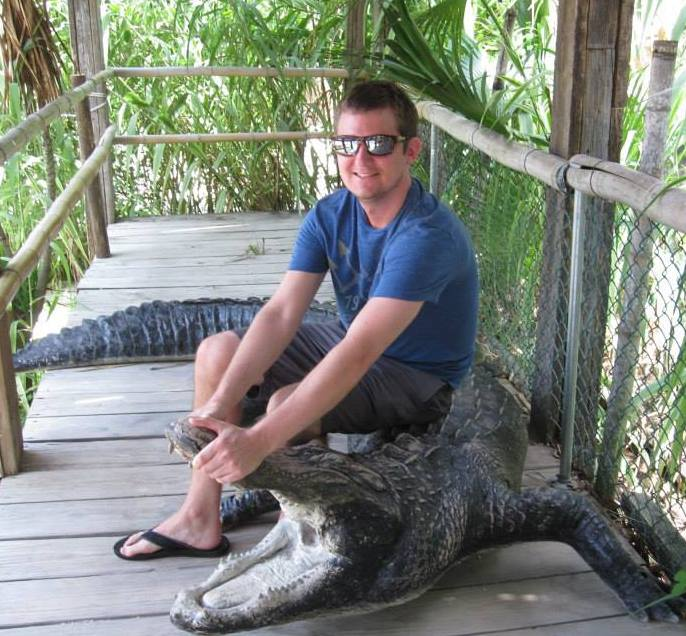

The greatest results are those that are achieved through persistence, knowledge, and love of the challenge. My name is Christopher Gramme and I started my pursuit of a career in programming with only two of the above which inevitably lead me to gain a third--knowledge. Starting my journey in Android development shortly after purchasing my first smartphone I was immediately immersed with a vision that would eventually be my very first application. Although it was a lengthy process of research, coding, trial and error, and more research I finally had my first project under my belt. I was proud of the result, but craved more. I knew how to develop Android apps, but something as common as a website alluded me. This brought me to where I am today. I now have a grasp of languages such as javascript, jquery, html, css, sass, bootstrap and a variety of helpful resouces to aid with development and new practices. As a self taught developer I tend to accentuate my passion and past experience with the mobile platform into my web applications. Two words sum it up--responsive design. I don't believe in developing websites that can't scale for an optimized experience. Although non-responsive design may not be fictional, as I would prefer, I can do my part to let us live on a planet that is plentiful with ems, percentages, meta tags, and media queries.